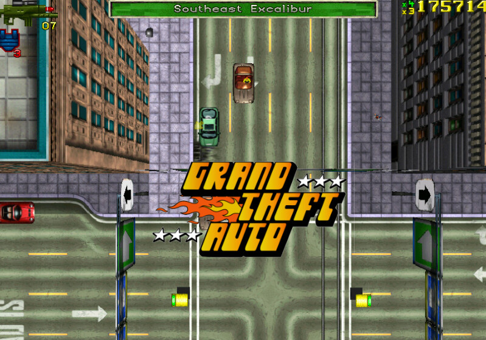

Grand Theft Auto Originales (I, II, London 1969)

Grand Theft Auto (GTA) - 1997:
El juego que inició la icónica saga de Grand Theft Auto fue lanzado en 1997. Desarrollado por DMA Design (ahora conocido como Rockstar North) y publicado por BMG Interactive, GTA introdujo a los jugadores en un mundo de crimen y caos urbano. El juego presentó una perspectiva aérea con vista desde arriba y permitió a los jugadores asumir el papel de un criminal recién llegado que realizaba misiones para diversas organizaciones criminales.
La estructura de misiones no lineales y la libertad para explorar la ciudad hicieron de GTA un juego innovador en su época. Aunque los gráficos eran simples debido a las limitaciones tecnológicas de la época, el juego se destacó por su jugabilidad revolucionaria y su enfoque en el crimen y la acción en un entorno urbano.
Grand Theft Auto 2 (GTA 2) - 1999:

Lanzado en 1999, GTA 2 llevó la fórmula del juego original a nuevas alturas. Aunque mantuvo la vista desde arriba, introdujo mejoras significativas en términos de gráficos y jugabilidad. Situado en una ciudad futurista llamada "Anywhere City", GTA 2 permitió a los jugadores realizar misiones para diferentes bandas criminales mientras evitaban la intervención de la ley. También se destacó por su banda sonora ecléctica y su enfoque en el caos y la anarquía.
Grand Theft Auto: London 1969 y Grand Theft Auto: London 1961 - Expansiones temáticas:
.jpg)
Estas expansiones, lanzadas en 1999, llevaron a los jugadores a una nueva ubicación y época: Londres en la década de 1960. Ofrecieron una experiencia similar a la de GTA 2, pero con un giro temático que reflejaba la cultura y el estilo de vida de la ciudad en esa época. Los jugadores realizaron misiones en las calles de Londres mientras participaban en actividades delictivas y evitaban las fuerzas del orden.
Ambos títulos presentaron la misma perspectiva aérea y estilo de juego que los juegos anteriores, pero la ambientación en Londres y la música característica de la década de 1960 dieron un toque distintivo a estas expansiones, agregando variedad y profundidad al universo de Grand Theft Auto en sus primeras etapas. Estos juegos sentaron las bases para el éxito continuo de la franquicia y la evolución hacia los títulos más avanzados que vendrían en el futuro.